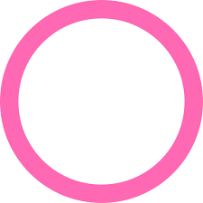

NEWS C.CH + – Офіційний телеканал з новинами в реальному часі по країні. Був створенний у 2022 році. Телеканал повідомляє про події в країні, чи серйозні новини, або якійсь події міжнародні, наприклад, кулінарія і так далі. Тільки один канал з новинами який стоїть прямо у усіх телевізорах жителів.

Sport R. of B.+
SPORT C.CH + – Офіційний телеканал по спорту, який показує “футбол, волейбол, баскетбол, доджбол” і так далі. Телеканал підходить щоб заспокоїти людину та подивитися матчі команд або країн. Телеканал з приколом стоїть у усіх телевізорах жителів.